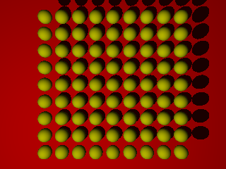

Dans POVRay une directive représente un mot-clé, introduit par un caractère #, et qui permet d'introduire des fonctionnalités de programmation concernant la descrition des scènes.
 L'image ci-contre contient 9*9 sphères disposées au dessus d'un plan. Écrivez dans un fichier nommé spheres.pov le script permettant de créer cette image.
Il serait judicieux d'utiliser la directive #while.